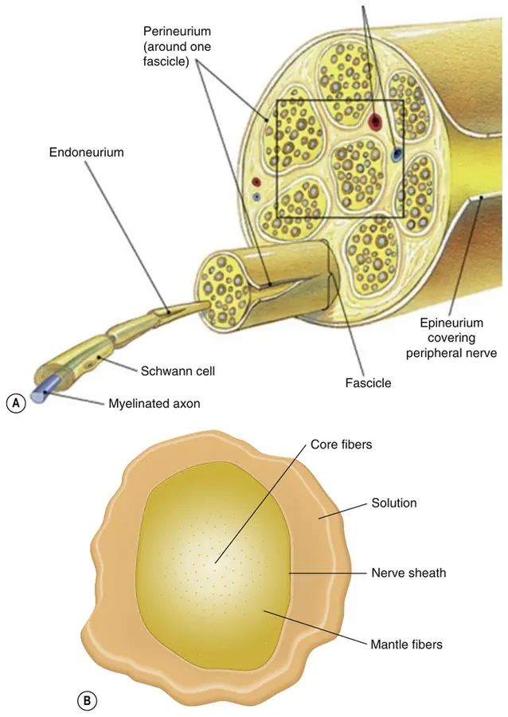

نسخه استخراجشده؛ ترجمه یا تأیید علمی انجام نشده است. وضعیت: captured
دانشجوی سال پنجم برای ترمیم مولر اول پایین یک کارپول لیدوکائین ۲٪ با اپینفرین تزریق کرده است. ده دقیقه بعد لب پایین بیمار بیحس است، ولی با نخستین تماس فرز از جا میپرد. تکنیکش ایراد داشت یا فک پایین همین است؟
شکست بیحسی پالپ در فک پایین بسیار شایعتر از فک بالاست. در مرور ۳۶ کارآزمایی بالینی، ۱۵ دقیقه پس از بلاک عصب آلوئولار تحتانی (IANB) حدود ۳۹٫۶٪ دندانها هنوز بیحسی کافی پالپ نداشتند؛ این رقم ۱۰ دقیقه پس از اینفیلتراسیون فک بالا حدود ۱۸٪ بود. گزارشهای جداگانه عددهای پراکندهتری، از ۳۱ تا ۸۱٪، آوردهاند.
صفحهی کورتیکال فک پایین در بزرگسال آنقدر ضخیم است که اینفیلتراسیون ساده، آنطور که در فک بالا جواب میدهد، معمولاً به پالپ نمیرسد. برای همین در فک پایین سراغ بلاک عصب میرویم.
IANB برخلاف بیشتر بلاکها لندمارک ثابتی ندارد. ارتفاع سوراخ مندیبولار از ۱ تا ۱۹ میلیمتر یا بیشتر بالای سطح اکلوزال متغیر است، و جای قدامی-خلفی آن را هم از نیمهی راموس تا سهچهارم فاصله از لبهی قدامی گزارش کردهاند.

سوزن باید حدود ۲۰ تا ۲۵ میلیمتر در بافت نرم پیش برود؛ هرچه مسیر عمیقتر، یک خطای کوچک در زاویه در انتهای مسیر بزرگتر میشود.
حتی وقتی جای سوزن با سونوگرافی یا رادیوگرافی دقیقاً کنار عصب تأیید شده، بیحسی تضمین نیست. فیبرهای سطحی تنهی عصب (mantle) به مولرها میروند و فیبرهای مرکزی (core) به ثنایاها. دارو از بیرون به درون عصب نفوذ میکند؛ پس فیبرهای سطحی زودتر و کاملتر بلاک میشوند و فیبرهای مرکزی دیرتر یا ناقص.
کانال مندیبولار دوشاخه (bifid) در حدود ۰٫۹۵٪ رادیوگرافیهای پانورامیک دیده میشود. در نوعی که دو سوراخ مندیبولار جدا دارد، سوراخ دوم معمولاً پایینتر است. اگر آن را در پانورامیک دیدی، بخشی از دارو را پایینتر از لندمارک معمول تزریق کن.